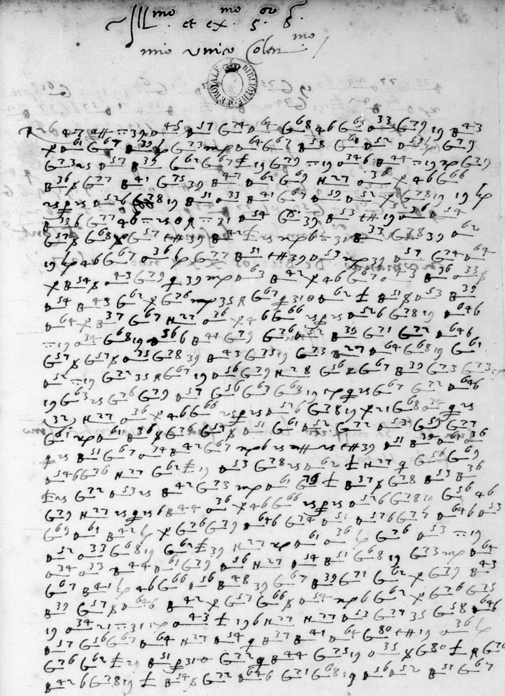
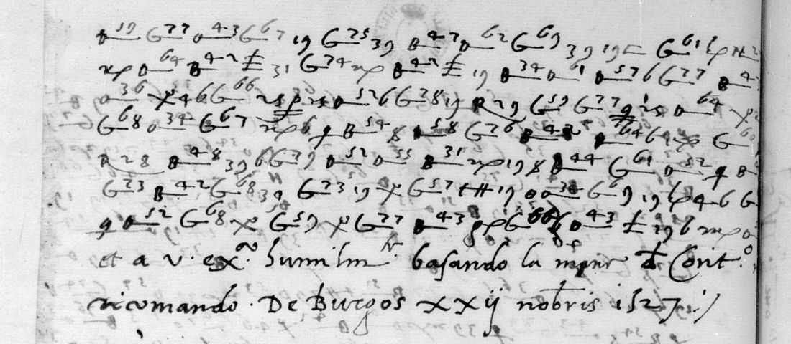

At a glanceKnown key applied, partial · f. 102r, 504 of 505 signs given a value; f. 102v open
- The letter
- Giovanni Antonio Bilia, the Duke of Milan’s agent with Charles V, to Francesco II Sforza, Burgos, 22 November 1527. One page wholly in cipher, seven more cipher lines, then a clear close, a postscript and the signature.
- Where
- Bibliothèque nationale de France, Français 3013 no. 43, ff. 102r–v (Gallica views 164–167). Catalogue item 291, part. No DECODE record.
- The cipher
- The Sforza chancery’s syllabic cipher: barred letters with two-digit numbers for syllables, numbers and signs for letters, a few words and names, and nulls.
- How it was deciphered
- With the Milan key sheet DECODE R5258, docketed “Cum equite Bilie”, Bilia’s own key. The transcription is by AI and has not been checked by a person; here the project’s own copy of the key was applied to it, the key sheet and the page were compared by eye, and a language model scored it against shuffled keys.
- What it says
- Bilia dined with an old lord who complained that the Duke was troubling a “conte Theophimo(?)”; Bilia calmed him and asks the Duke to write a letter of guarantee “per non desperarlo in questa sua vechieza”.
- Still open
- The seven cipher lines of f. 102v; the name code B.58; about 28 doubtful signs on f. 102r. The letter no. 42 to the ambassador Taverna, same day, is in another cipher.
- Credit
- Transcription and reading by Harumi-Matsuba (issue #55, 20 October 2026), made with Claude and OpenAI Codex. Key values from this project’s transcription of R5258 and George Lasry’s independent recovery of the same key.
01 The letter

The volume Français 3013 gathers original letters of the sixteenth century. Its no. 43 is a letter of Giovanni Antonio Bilia, the “Cavaliere Bilia”, one of the Sforza agents at Charles V’s court, to Francesco II Sforza, Duke of Milan. The first leaf is entirely in cipher. The verso has seven more lines of cipher, then in clear: “et a v. ex.a humilm.te basando la mano di cont.o ricomando. De Burgos XXII nobris 1527”, the postscript “Sua M.ta ha disposito l’andata sua ad Valentia como facto Natale” and the signature “Humill.mus servus Jo. Ant.s Bilia”.

No. 42 of the same volume, Bilia to Jo. Francesco Taverna (“Zaberna” in the catalogue), the Duke’s ambassador, written the same day, is in a different cipher: base letters M, A, H, R, B and others with numbers 1–29, mixed with clear Italian. Neither R5258 nor Bilia’s other key R5237 fits it, so it is not part of this page and stays in the catalogue.
02 The key
The key is a sheet in the Archivio di Stato di Milano, Carteggio Sforzesco cart. 1591 no. 24, on DECODE as R5258. Its docket reads “Cum equite Bilie / extracta ex cifris”: the cipher used with the Cavaliere Bilia, copied out of the ciphers. The same sheet reads “el Gilino”’s letter of 15 September 1527, a different correspondent with its own page, where the sheet is transcribed; George Lasry recovered the same key independently from that letter.
Syllables are written as a barred base letter with a number above: B.31–50 ba…gu, B.51–55 fa…fu, D.51–65 la…nu, G.56–80 pa…tu, o.33–47 va…zu. Single letters have several signs each (a = 19 or θ-like forms, e = 25, n = 6 or 36, s = 45 or a crossed x, t = 46). A few words have their own signs (H.27 che, H.28 come, R.23 con), names have codes in a separate block, and some signs are nulls. The contributor added values for five signs that are not on the sheet as transcribed here: ß = r, £ = l, F = c, tt = t, qx = ss (41 signs, 8.1% of the page), from the sense of the letter.
03 The reading of f. 102r
Harumi-Matsuba’s reading, with their word division and marks; ( ) supplied or suggested, (?) uncertain, [ ] no value. Their transcription was made by Claude Opus 5.5 and cross-checked by AI only.
Hozi ce sono ritrovato a disnare col signore [B.58] pu le(?) molto si è meco querelato, havendo hauto carte da suo genero, che vostra ecelentia fa va(?) dare molestia al conte Theophimo(?) suo fi(glio?) tavolo(?) per rispeto dele inhibitione altre volte fatoli. Gi(à) me sono sforzato con ogni destreza cavarlo di questa imprecione el farli conoscere che vostra ecelentia non haveria mandato tale cosa se non per pervitio (servitio?) di sua signoria, quale ha sempre amato come papre (padre?); cosi si aquietato. Me pareria essere (bene?), se non che vostra ecelentia scrivesse qua ina (una?) carta por la quale se li potesse fare vedere in e[ff]etto la con a volonta(?) che quela li tiene, el che con parole se li è designato, l certifi[ca]to che, essendo vostra ecelentia patrona del stato, non solamente non li levaria quelo che una volta li haveva donato, vo(?) che lo faria signore d’altra magiore cosa. Questo dico per non desperarlo in questa sua vechilza (vechieza?), lanche che li tompi (tempi?) non me pareno che lo concedano; tutavolta quel g(?) facio secondo sua virtu l prudentia; al forse non saria male fare …
In English, roughly: today Bilia dined with a lord (name code B.58) who complained bitterly that, according to letters from his son-in-law, the Duke was troubling “conte Theophimo” over prohibitions made earlier. Bilia talked him out of it, explaining that the Duke would not have sent such an order except for his good, having always loved him like a father. He suggests the Duke write a letter guaranteeing that, as master of the state, he would not take back what he had once given but would make him lord of something greater, “so as not to drive him to despair in his old age”, though the times hardly allow it. The text runs on to f. 102v.
04 The checks made here
The project’s own key. The contributor’s sign transcription was decoded again with the project’s files for R5258 (targets/gilino1527), mapping their sign names onto ours. Our key gives a value to 459 of the 505 signs; where both keys give one, 440 of 459 agree (95.9%). The 19 that differ are the crossed x (null in our Gilino key, s for the contributor), the θ-like sign (a for us, o for them) and one plain o sign. On the image of the R5258 sheet the crossed x stands in the s column and the θ-like sign in the o column, so the contributor follows the sheet and our Gilino values for these signs were guesses from context. The other 45 signs are their five added signs, two nulls, a sign they read as a cursive 25, the name code and one unreadable digit.
Against chance. Scored with the project’s Italian model (it-cinquecento, order 5, letters only), our decode gives −2.18 per character; 1000 shuffles of the same values over the same signs give at best −3.11, and none reaches the real key. The decode reads as Italian from the first line to the last.
The page itself. Lines 1–5 of f. 102r (81 signs) were compared sign by sign with the full-size image: every sign name agrees. At three places the second digit of a number (39 or 33, 69 or 65) cannot be told apart at this resolution, and the transcription follows the sense. No person, on either side, has checked the rest of the transcription.
How much reads. 504 of the 505 signs of f. 102r have a value. Counting the signs inside the readings the contributor marks as doubtful, roughly 94% of the page gives sense (an estimate, not a measurement). With f. 102v not deciphered, the letter as a whole is partial.
05 What remains
- f. 102v, seven cipher lines (118 signs). With our key 102 of them have a value and some words appear (“a suo genero”, “vostra ecelentia”, “con desiderio si aspetta”, “con le risposte di”), but there is no continuous sense, and the margin over shuffled keys is thin (−2.60 against −2.75). The line ends run into the gutter of the microfilm. It needs a careful human transcription.
- B.58, the code of the old lord, is not on the R5258 sheet (its name block has B.55 Imperatore, B.56 Sua Maestà, B.57 Nassau, B.60, B.62, B.63, B.66, B.71, but no B.58).
- About 28 doubtful signs on f. 102r: eight places where the two AI image checks disagreed, the name “Theophimo”, the slips or misreadings pervitio, papre, ina, tompi, vechilza, the sign £ read as l where et may be meant, and one digit lost (B.3?).
- Print. Neither the contributor nor this project has seen Cerioni’s 1970 edition of the Sforza keys or Giudici 2018.
- No. 42, to Taverna, in another cipher with no key yet.
06 Sources
- Bibliothèque nationale de France, Français 3013, Gallica ark:/12148/btv1b9060138r, views 164 (f. 102r), 165 (f. 102v), 167 (address); no. 42 at views 159, 160, 162.
- Key: Archivio di Stato di Milano, Carteggio Sforzesco cart. 1591 no. 24, DECODE R5258; Bilia’s other key, cart. 1591 no. 3, DECODE R5237. Transcription of R5258 in
targets/gilino1527/; George Lasry’s recovery intargets/gilino1527/lasry/. - Harumi-Matsuba, bilia1527-public (CC BY 4.0 data, MIT code) and issue #55, 20 October 2026: transcription, key table, reading, controls and prior-work check.
- Gilino’s letter in the same key: Gilino to Francesco II Sforza, 15 September 1527.
Files: targets/bilia1527/ in the repository (the contributor’s files in contributed/, the checks in decode_check.py and measure.txt).